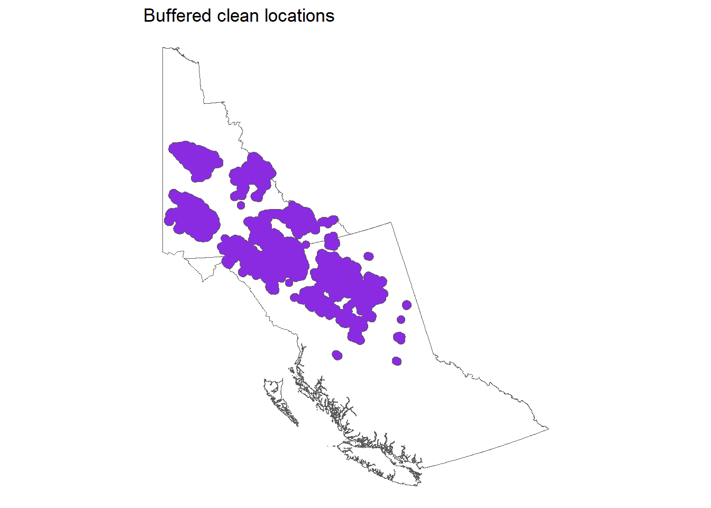
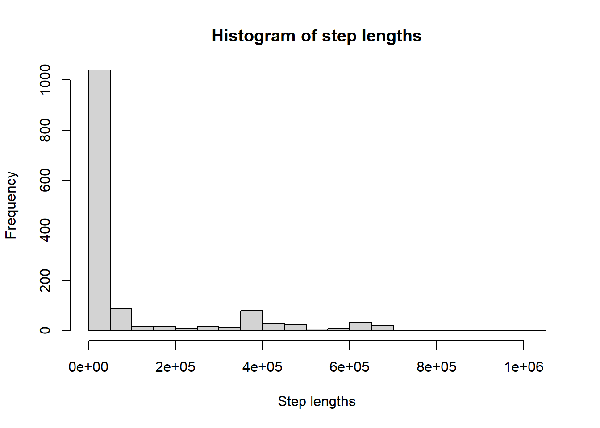
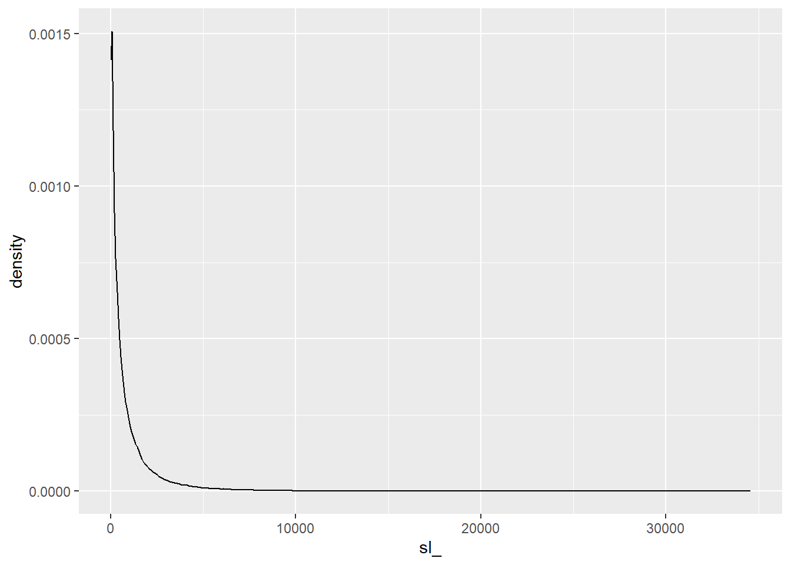
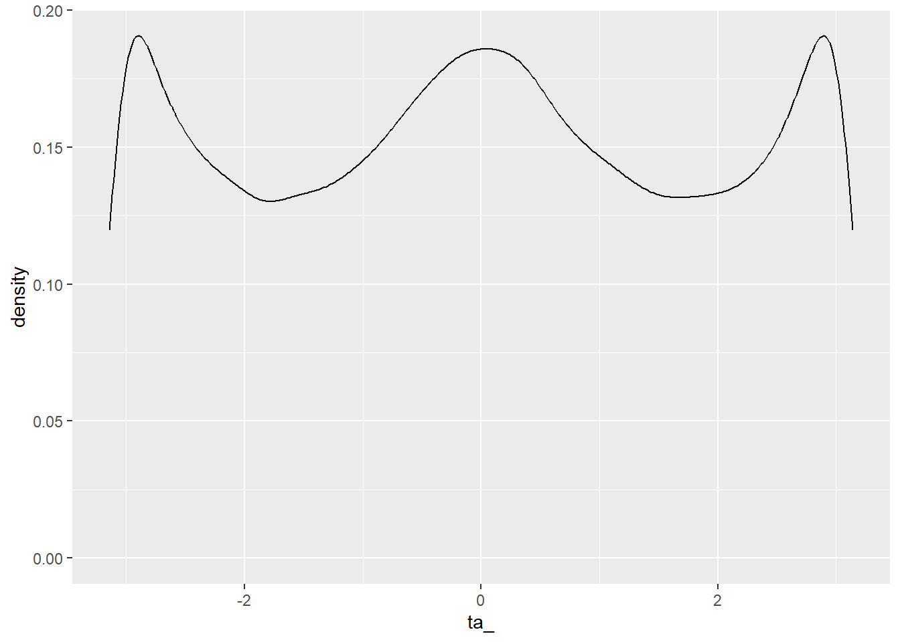
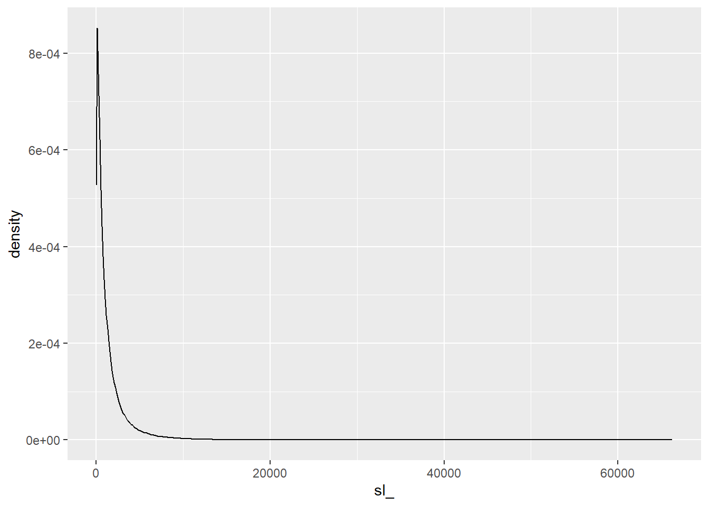
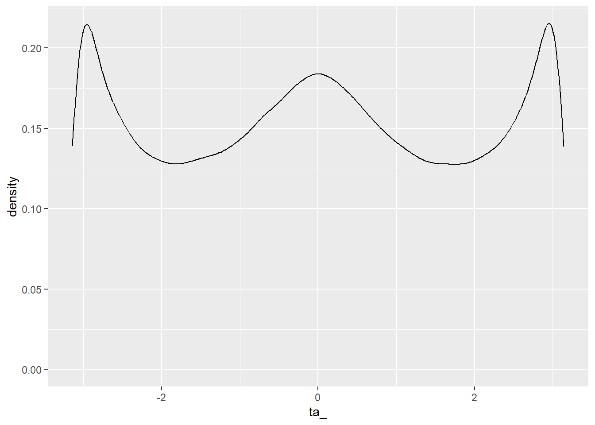
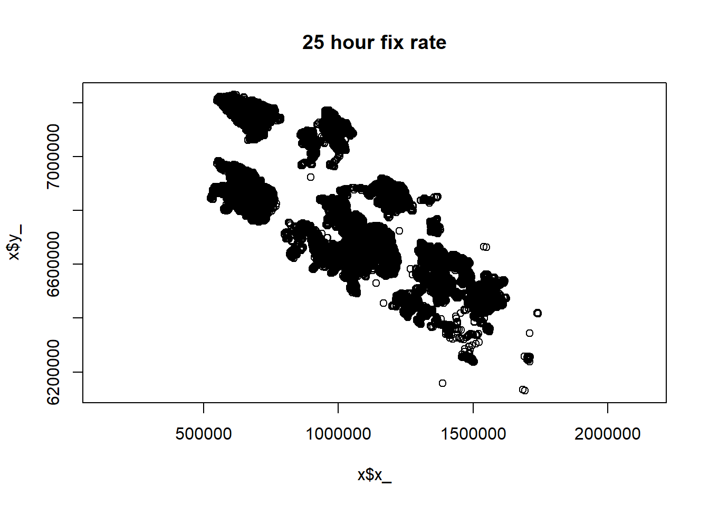
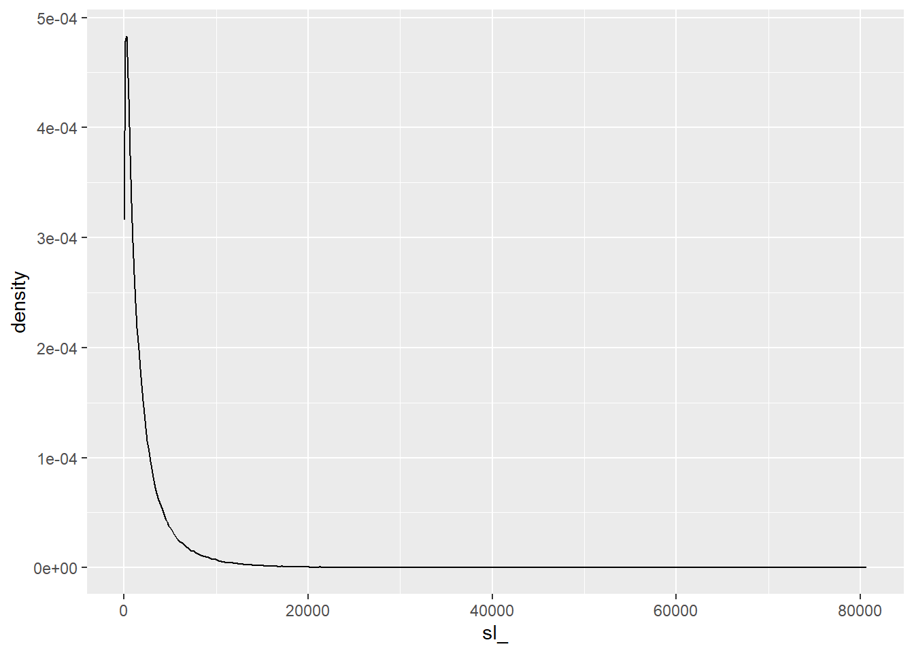
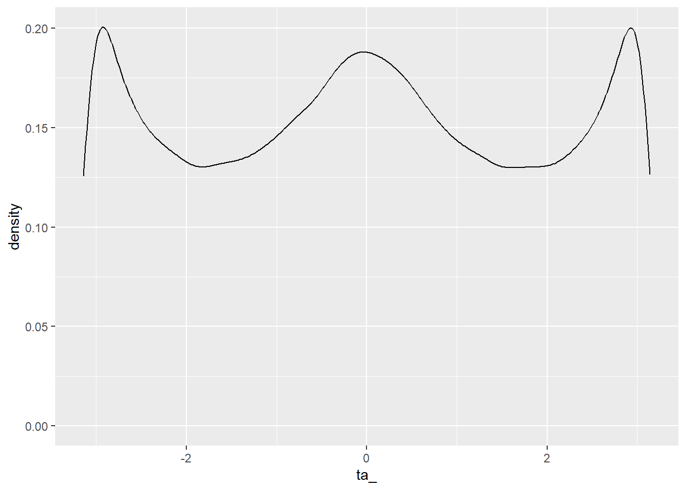

NMC summary
Summary
Data cleaning
At this point, I’ve cleaned both YT and BC data to:
1) remove points that are not geographically feasible (in Germany, the ocean, etc)
2) remove any pre-/post-deployment points
3) remove first week of data (capture effect)
4) remove low quality steps: DOP > 11 (if recorded)
5) remove duplicate points
6) remove unreasonably fast steps (preliminary)
7) remove fast round trips
8) remove defunct clusters (post death/fall off)
9) remove individuals with less than 3 points
Now, we have a “clean” data set.
Exploring the data
Now we’re going to explore the clean data.
Clearly, still not perfectly clean, but it’s a good starting point.
At this point, there are 1223218 in our cleaned data set.
Fix rates
Now we’re going to explore what the range of fix rates looks like across the whole data set
Quantiles of mean fix rates by individual
0% 25% 50% 75% 100%
1.062915 5.841326 9.129221 14.907460 573.909190 Quantiles of median fix rates by individual
0% 25% 50% 75% 100%
1.00 5.75 8.00 13.00 240.50 Mean of the median fix rates by individual
[1] 11.02585Steps
Let’s explore the all the step regardless of fix rate

8 hour fix rate
The median of median fix rates was 8 hours, so let’s check out resampling to this fix rate
Step length distribution

This is a typical distribution, though it looks like there are still a few unnaturally long steps. So let’s check the quantiles.
0% 25% 50% 75% 100%
0.00000 88.30026 366.36013 1069.28278 35276.71324 At the extremes:
90% 95% 99%
2412.400 3784.069 8145.762 So, looks like we could filter out the top 99% of steps if we need to remove the unrealistically long 34 km step taken in within 8 hours…
Now, lets check out the turn angles

That’s a nice looking von Mises distribution, so looks good.
However, this fix rate leads to us only having 224397 out of the original 1223218 observations. Not terrible, but let’s check another fix rate.
13 hour fix rate
The 75% quantile of median fix rates was 13 hours, so we’ll try that next.
Let’s check the step length distribution:

Again, this looks good but has some unrealistically long step lengths, so let’s explore deeper.
0% 25% 50% 75% 100%
0.0000 252.7824 707.2508 1684.1485 82427.1468 And, at the extremes:
90% 95% 99%
3401.805 5088.366 10092.753 Again, looks like we could filter out the top 99% of steps if we need to remove the unrealistically long 66 km step taken in within 13 hours…
Let’s check the turn angles:

This also looks good.
Now, this fix rate leads to us having 507417 out of the original 1223218 observations. So, this is better than the 224397 observations at the 8 hour fix rate.
25 hour fix rate
Let’s try a 25 hour fix rate to see if we can get more data. This comes with the trade off of our inferences from movement parameters being very coarse.

Let’s check the step length distribution:

Again, this looks good. Let’s explore deeper.
0% 25% 50% 75% 100%
0.0000 448.4574 1218.8832 2784.8482 129362.9226 And, at the extremes:
90% 95% 99%
5424.577 7882.267 14914.276 Again, looks like we could filter out the top 99% of steps if we needed. Is 80 km unrealistically long in 25 hours? Probably?
Let’s check the turn angles:

That’s a nice looking von Mises distribution, so looks good.
Now, this fix rate leads to us having 311242 out of the original 1223218 observations. So, this is better than the 224397 observations at the 8 hour fix rate and less than the 507417 observations at the 13 hour fix rate. The 13 hour fix rate is probably our sweet spot